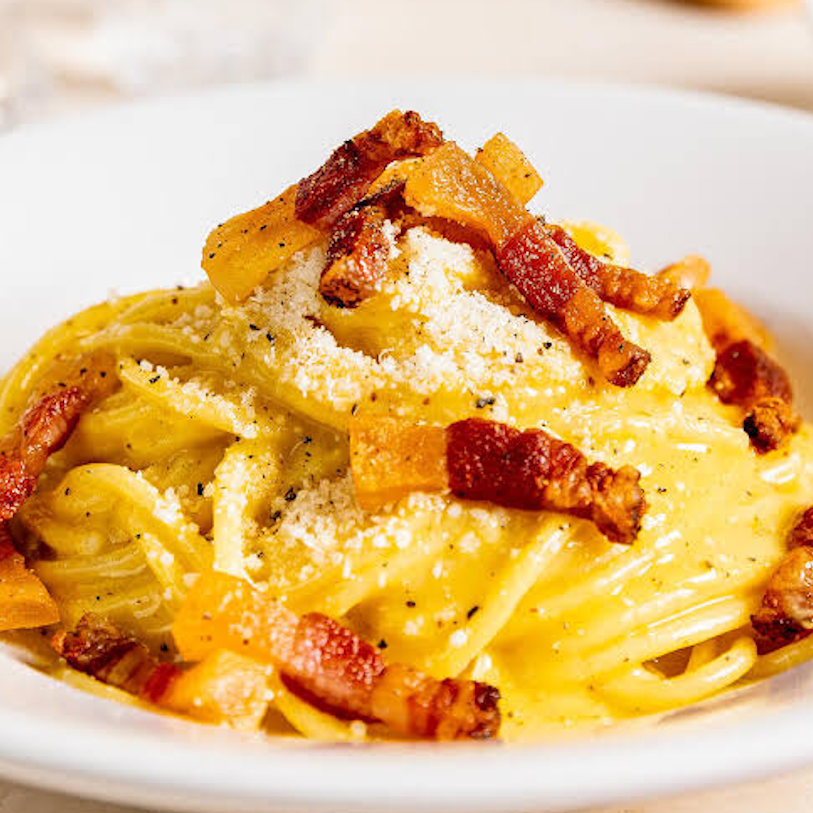
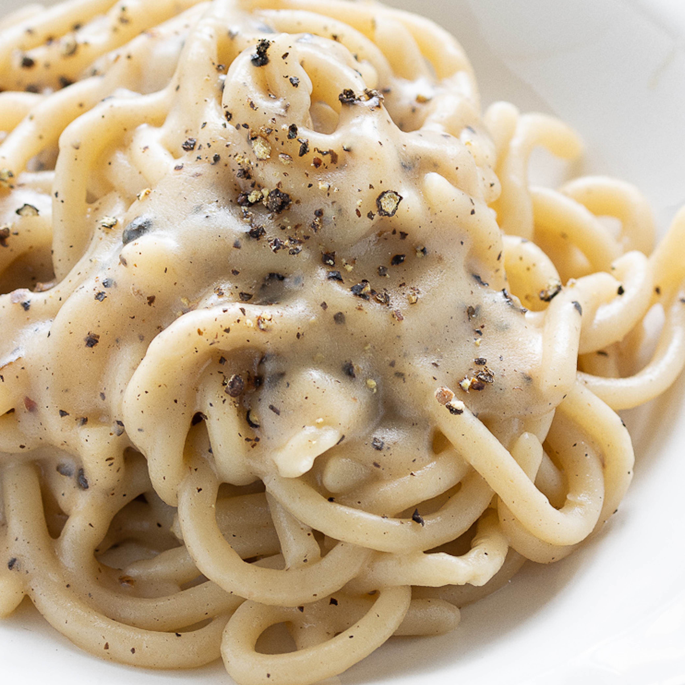
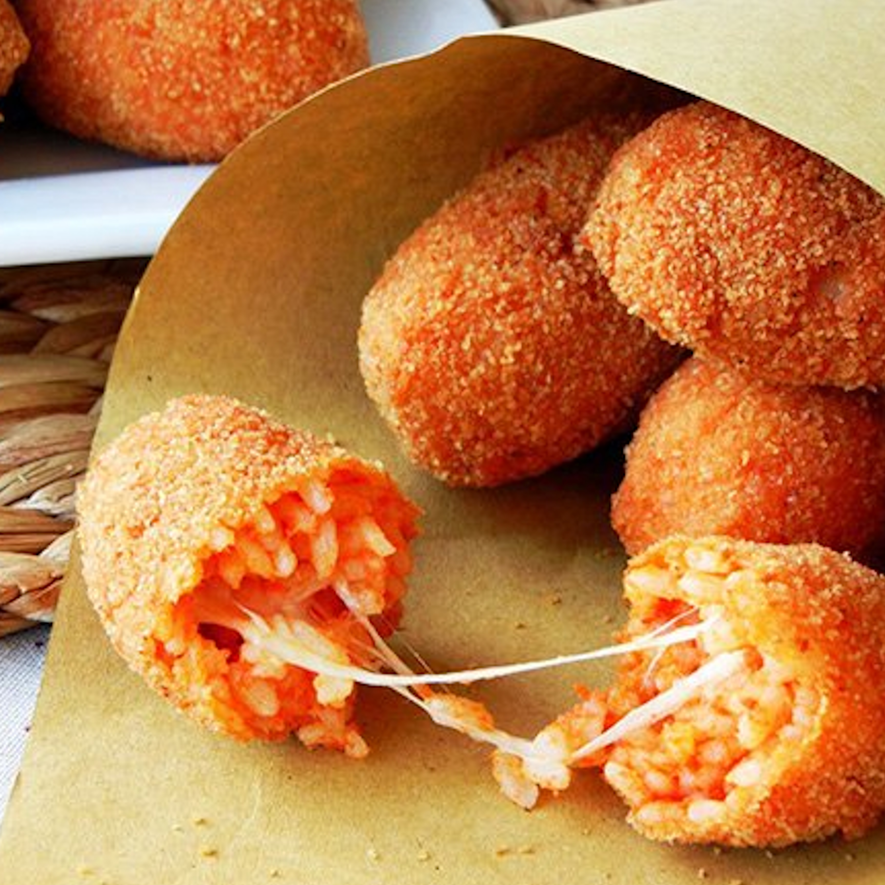
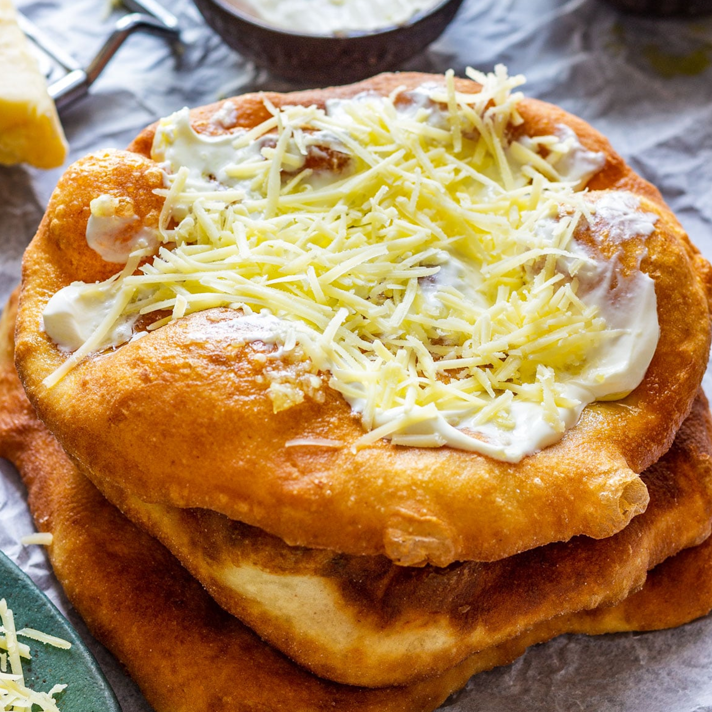
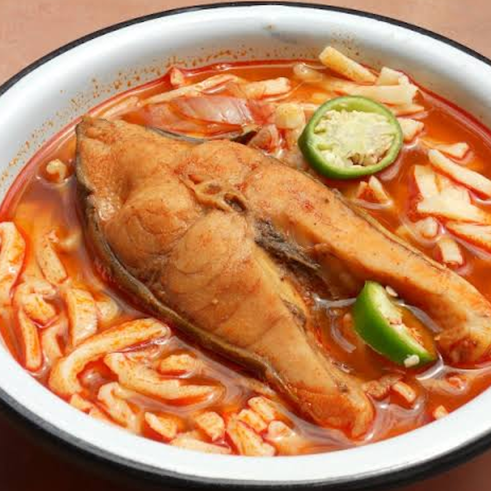

Roman cuisine is simple, hearty, and deeply rooted in tradition. It relies on a few high-quality ingredients, especially Pecorino Romano cheese and guanciale (cured pork cheek), to create unforgettable flavours.
Roman cooking is often called “cucina povera” (poor cuisine), because it was born from the need to use inexpensive, local ingredients in creative ways. Despite its humble origins, it is now considered one of the most beloved cuisines in Italy and in the world.
The dishes are not complicated, but they require attention to detail and respect for tradition: using the wrong ingredient can ruin a classic recipe.
Spaghetti alla Carbonara is perhaps the most famous Roman dish in the world.
Despite its uncertain origins, it is the symbol of the city’s food culture. Some say it was invented by coal miners (the word “carbonara” comes from “carbone,” meaning coal), while others believe it was created in the mid-20th century as a dish for American soldiers stationed in Rome.
The authentic recipe uses only eggs, guanciale, Pecorino Romano, and black pepper—absolutely no cream! The creaminess comes from the eggs and the starchy pasta water, which are mixed together off the heat to create a smooth, silky sauce.
It is a dish that seems simple, but it requires practice to perfect: the eggs must not scramble, and the cheese must be freshly grated.
Another masterpiece of Roman pasta is Cacio e Pepe. The name literally means “cheese and pepper.” It is a minimalist dish made by combining starchy pasta water, freshly grated Pecorino Romano, and toasted black pepper to create an incredibly creamy sauce.
It is simple, but perfect. The secret is in the technique: the cheese must be melted slowly with the pasta water to avoid clumps, and the pepper must be freshly cracked and toasted in a pan to release its aroma.
In Rome, you will find Cacio e Pepe in almost every trattoria, and each cook has their own small variations. Some add a little butter or olive oil, but purists insist that the only ingredients are pasta, cheese, and pepper.
If you want to taste the true essence of Roman cuisine, this is the dish to order. Pair it with a glass of Frascati wine, a white wine produced in the hills near Rome, and you will have a perfect meal.
Of course, Roman cuisine is not only pasta. Another popular dish is Supplì, a fried rice ball filled with mozzarella cheese. When you break it open, the cheese stretches into a long string, which is why it is sometimes called “supplì al telefono” (telephone-style supplì).
It is a common street food and a favourite among locals and tourists alike. For dessert, try Maritozzo, a sweet bun filled with whipped cream, which is traditionally eaten for breakfast with a cup of coffee. Roman food is not fancy, but it is honest, filling, and full of flavour.
It reflects the character of the city: warm, welcoming, and a little bit chaotic.



Hungarian cuisine is known for being spicy, hearty, and colourful, with paprika as its signature spice. Paprika is made from dried peppers and comes in several varieties, from mild and sweet to hot and pungent.
It was introduced to Hungary in the 16th century by the Ottomans, and it quickly became a staple of Hungarian cooking. Today, Hungary is one of the largest producers of paprika in the world, and the spice is protected by law as a national treasure.
Hungarian food is designed to warm you up in cold weather: it is rich, filling, and often served with bread or dumplings. It is not a light cuisine, but it is deeply satisfying and full of character. Goulash (Gulyás) is Hungary’s national dish.
It is a thick soup or stew made with beef, potatoes, carrots, and a generous amount of paprika. It is the ultimate comfort food and a must-try for every visitor. The name comes from the Hungarian word “gulyás,” meaning “herdsman,” because the dish was originally cooked by cattle herders in large cauldrons over open fires.
Today, goulash is served in restaurants and homes all over the country, and each family has its own recipe. Some versions are more like a soup, while others are thicker and more like a stew. In Budapest, you can find goulash in traditional restaurants, but also in the Great Market Hall, where local vendors serve it in huge pots.
It is best enjoyed with a slice of fresh bread and a glass of red wine, such as Egri Bikavér (Bull’s Blood of Eger).
For a quick and delicious street food experience, try Lángos. It is a deep-fried flatbread topped with sour cream, garlic, and grated cheese. It is crispy on the outside, soft on the inside, and absolutely addictive.
Lángos is sold at food stalls and markets all over Budapest, especially in the Great Market Hall and at festivals. The classic version is topped with sour cream and cheese, but you can also find variations with ham, sausage, mushrooms, or even sweet toppings like chocolate and banana.
It is the perfect snack to eat while exploring the city, and it is very affordable. Be careful, though: it is fried, so it is not exactly a light snack, but it is worth every calorie.
And for dessert, you cannot miss the Kürtőskalács, or Chimney Cake. This sweet, cylindrical pastry is baked on a rotating spit until its sugar coating caramelizes into a crispy, golden crust.
It is often rolled in cinnamon, walnuts, or chocolate. It is the perfect sweet ending to a Hungarian meal. The name “chimney cake” comes from its shape, which looks like a chimney, and from the steam that rises from it when it is freshly baked.
It originated in Transylvania, a region that was historically part of Hungary, and it is now popular all over Central and Eastern Europe. In Budapest, you will find chimney cake stands on almost every corner, especially in the tourist areas.
It is best eaten warm, when the sugar is still crunchy and the dough is soft. It is also a popular gift to bring home, as it stays fresh for a few days.
Hungarian cuisine is also famous for its soups, such as Halászlé (fisherman’s soup), a spicy soup made with river fish and paprika, and Jókai Bableves (Jókai bean soup), a hearty bean soup named after the Hungarian writer Mór Jókai.
For a complete experience, try a traditional Hungarian dinner with multiple courses, starting with a soup, followed by a main dish, and ending with a dessert. And don’t forget to taste Pálinka, a strong fruit brandy that is often served as a digestif.
It is not for the faint of heart, but it is an important part of Hungarian hospitality.


